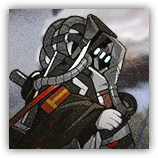

机密
编号 DB · 失控体 · 极度危险
邪魔的利刃
失控体档案 · 原编制：乌萨斯帝国内卫 · 观测地：萨米地区
档案主体
绝密

影像来源：756号中继 · 已遮蔽- 名称
- 邪魔的利刃
- 原编号
- U15 · “皇帝的利刃”
- 状态
- 失控 / 脱离编制
- 分类
- 远距离 · 物理 · 地面
- 威胁等级
- 极度危险 · 接触即伤亡
- 备注
- 影像经反色与条码处理，██部分不予公开。
▼ 档案摘要
“邪魔的利刃”并非独立编制，而是“皇帝的利刃”的失控形态—— 作为乌萨斯某种意志的体现，皇帝的利刃被制造出来时便与北地邪魔的碎片同炉。 当束缚仪式失效，躯体便会向更深处滑落，最终变成连昔日同僚都必须猎杀的存在。
“皇帝的利刃生要见人，死要见国度，决不允许以此等失控的状态存在于世。 它将被生前所有同僚猎杀，直至彻底消亡。”
—— 摘自乌萨斯内卫内部处决令，落款与姓名已涂黑
▼ 识别特征
接近目标时，周围雪花会变为黑色。 影像中的轮廓呈黑烟状，无固定实体，仅能通过雪花变色与地面焦痕判断其存在。
▼ 能力参数（节选）
- 攻击
- 远距离 · 物理 · 对“国度”内目标伤害大幅提升
- 特殊
- 持续在自身周围生成“国度”，其中单位攻速大幅下降
- 等级
- 领袖级 · 单个个体足以屠剿数支小队
- 战例
- 乌萨斯北部边境清剿记录、萨米雪原异常事件
▼ 最近活动记录
- 时间
- 泰拉历1100.12.16
- 地点
- 萨米地区
- 目标
- 一名乌萨斯叛徒（已确认消灭）
- 备注
- 疑似误伤平民。相关知情人已由后续小组跟进。
▼ 相关情报
据独眼巨人凛视的预言，此次事件早有预兆。 但预言中提到的“选择”……似乎并未发生。